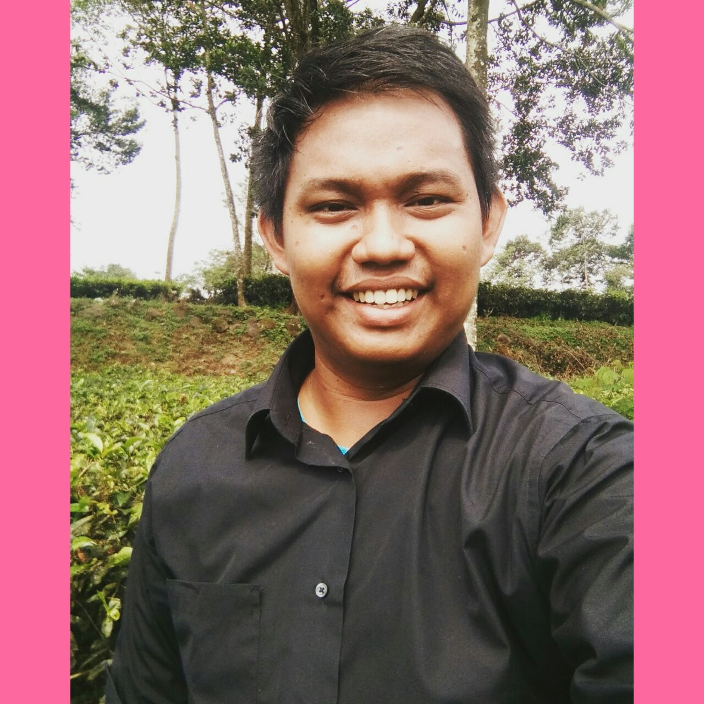

Nama saya Andre Septian, saya Lahir di Jombang, 14 Oktober 1997, saya adalah anak pertama dari empat bersaudara, buah dari pasangan Listiyono dan Emi. Andre adalah panggilan akrab saya, saya terlahir di keluarga yang bisa di bilang cukup, Ayah saya seorang PNS, sedangkan Ibu saya adalah ibu rumah tangga. Sejak kecil saya selalu di nasehati oleh ayah saya untuk selalu rajin beribadah, jujur dan baik terhadap sesama. Ketika berumur 6 tahun, saya memulai pendidikan di SDN 3 Maospati, kemudian setelah lulus saya melanjutkan pendidikan di SMPN 2 Ngawi di tahun 2009. Selepas lulus dari SMP di tahun 2012, saya mengikuti pindah tinggal di kota Ngawi dan melanjutkan pendidikan di SMAN 2 Ngawi . Ketika menginjak kelas X SMA tersebut, saya mengikuti lomba menulis puisi antar sekolah se-Kota Ngawi , dan puisinya yang berjudul Anjay aye menjadi juara ke 3 dalam perlombaan tersebut. Tentu saja ini membuat hati saya senang dan semakin bersemangat dalam menulis, terutama puisi-puisi bertemakan lingkungan. Bagiku lingkungan merupakan salah satu aspek penting dalam kehidupan karena lingkungan yang bersih dan asri dapat membuat jiwa manusia kuat dan sehat. Selain itu saya juga aktif dalam berbagai kegiatan di sekolah, saya bergabung dengan organisasi Pramuka dan juga pernah menjabat sebagai pemimpin redaksi majalah dinding sekolah. Saat ini saya sudah duduk di bangku kuliah di sebuah universitas di Yogyakarta yaitu Universitas Negeri Yogyakarta.